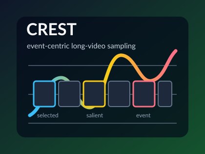
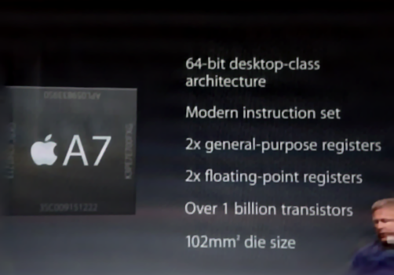
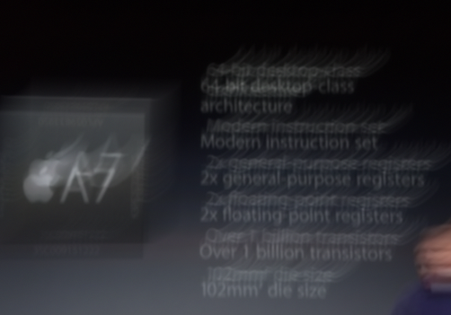
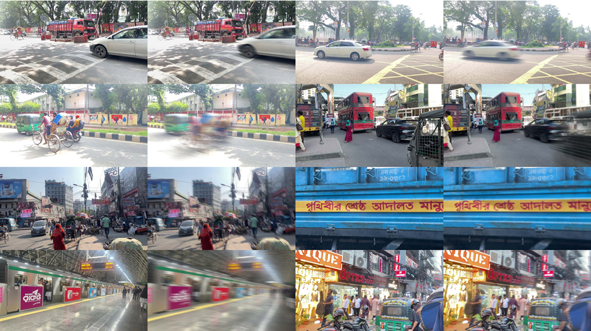
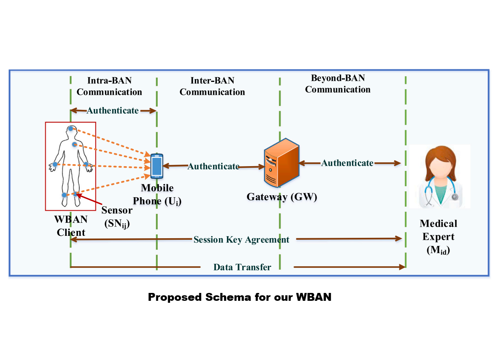

|
Abdul Mohaimen Al Radi I'm a PhD student at the University of Central Florida, where I work under Dr. Yu Tian and Dr. Mubarak Shah on problems in computer vision, particularly image restoration, Long Video Generation, and LLM agents in medicine. Previously, I was a research assistant at the Cognitive Agents and Interaction Lab at the University of Dhaka, where I worked on projects including image deblurring, generative models, 3D reconstruction, and segmentation. My long-term research goal is to democratize AI—advancing the field of computer vision, pushing toward AGI, and enabling meaningful applications in healthcare. Through my PhD, I aim to develop deep research expertise, mentor upcoming researchers, and eventually establish a lab that reflects my research values and vision. |
{kind=link}
ResearchI'm interested in image restoration, multi-modal learning, medical image analysis, 3D reconstruction, and generative models. I'm particularly interested in developing algorithms that can learn from small data and generalize well to new tasks. I'm also interested in the intersection of computer vision and healthcare, and I'm excited about the potential for AI to improve patient outcomes and reduce healthcare costs. |
Education |
|
|
University of Central Florida PhD student in Computer Science Fall 2025 - Present |
|
|
University of Dhaka BS.c in Computer Science and Engineering, (CGPA 3.72/4.00), top 10% of class Jan 2019 - Jan 2024 |
|
|
Aero-World: Action-Conditioned Aerial Video Generation from Inertial Controls
Abdul Mohaimen Al Radi, Kunyang Li, Yuzhang Shang, Mubarak Shah, Yu Tian arXiv, 2026 download / demo We introduce Aero-World, a controllable aerial video generation method that adapts a pretrained image-to-video diffusion model to follow fine-grained inertial controls. The method injects translational acceleration and angular velocity as action tokens and uses a frozen latent-space physics probe for inertial-consistency supervision, improving motion alignment and visual quality on the AeroBench evaluation benchmark. |
|
 |
CREST: Curvature-Regulated Event-Centric Sampling for Efficient Long-Video Understanding
Mehrajul Abadin Miraj, Abdul Mohaimen Al Radi, Shariful Islam Rayhan, Md. Tanvir Alam, Ismat Rahman, Yu Tian, Md Mosaddek Khan arXiv, 2026 download CREST is a training-free frame selection method for long-video understanding. It uses local curvature in query-frame relevance over time to allocate a fixed frame budget around salient events, improving efficiency while preserving most of the accuracy of stronger multi-stage retrieval pipelines. |
|
 Sharp
 Blurry
|
Blind Image Deblurring with FFT-ReLU Sparsity Prior
Abdul Mohaimen Al Radi*, Prothito Shovon Majumder*, Md Mosaddek Khan, WACV, 2025 download Blind image deblurring is the process of recovering a sharp image from a blurred one without prior knowledge about the blur kernel. It is a small data problem, since the key challenge lies in estimating the unknown degrees of blur from a single image or limited data, instead of learning from large datasets. The solution depends heavily on developing algorithms that effectively model the image degradation process. We introduce a method that leverages a prior which targets the blur kernel to achieve effective deblurring across a wide range of image types. In our extensive empirical analysis, our algorithm achieves results that are competitive with the state-of-the-art blind image deblurring algorithms, and it offers up to two times faster inference, making it a highly efficient solution. |
|
 |
Deblurring in the Wild: A Real-World Image Deblurring Dataset from Smartphone High-Speed Videos
Syed Mumtahin Mahmud, Mahdi Mohd Hossain Noki, Prothito Shovon Majumder, Abdul Mohaimen Al Radi, Sudipto Das Sukanto, Afia Lubaina, Md Mosaddek Khan, arXiv, 2025 download We present the largest real-world image deblurring dataset, built from smartphone slow-motion videos. By averaging 240 fps frames to create blur and using the center frame as the sharp reference, we generate over 42,000 high-resolution blur-sharp pairs. This makes it roughly 10 times larger and 8 times more diverse than existing datasets. Covering a wide range of indoor and outdoor scenes with various object and camera motions, our benchmark reveals significant performance drops in state-of-the-art models, highlighting its complexity. The dataset and generation scripts are available on HuggingFace. |

|
From Attention to Frequency: Integration of Vision Transformer and FFT-ReLU for Enhanced Image Deblurring
Syed Mumtahin Mahmud, Mahdi Mohd Hossain Noki, Prothito Shovon Majumder, Abdul Mohaimen Al Radi, Md. Haider Ali, Md Mosaddek Khan ICAART, 2026 download / code We propose a dual-domain image deblurring architecture that combines Vision Transformers with an FFT-ReLU frequency module. The ViT backbone captures local and global dependencies, while the FFT-ReLU component enforces frequency-domain sparsity to suppress blur artifacts and preserve fine details across challenging image restoration settings. |
|
 |
An end-to-end authentication mechanism for wireless body area networks
Mosarrat Jahan, Fatema Tuz Zohra, Md Kamal Parvez, Upama Kabir, Abdul Mohaimen Al Radi, Md. Haider Ali Shaily Kabir, Smart Health, By Elsevier, 2023 Journal This paper presents a secure authentication scheme for Wireless Body Area Networks (WBAN) in healthcare. Unlike existing approaches that assume patients' phones are trustworthy, our method treats phones as semi-trusted while enabling secure communication between medical sensors and healthcare providers. Analysis shows the scheme is both secure against attacks and efficient in real-world conditions. |
News |
Work Experience |
|
|
Graduate Research Assistant, University of Central Florida |
|
|
Research Collaborator, University of Dhaka, |

|
Research Assistant, Cognitive Agents and Interaction Lab, University of Dhaka |
Additional Experience |
Workshops |
Hands on Deep Learning and Open Source Large Language Models, 2024 |
|
© Abdul Mohaimen Al Radi Template from Jon Barron |